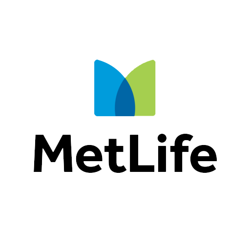

Perfil do cliente
Necessidades específicas de cada pessoa, família ou empresa.
Seguradoras
Cada companhia possui critérios, especializações e diferenciais próprios. A Originalli representa o interesse do cliente na análise das alternativas.
Solicitar orientaçãoNossas seguradoras parceiras
Uma rede diversificada amplia as possibilidades de comparação e nos permite buscar a solução mais adequada para cada pessoa, família ou empresa.

A indicação considera o perfil do risco, as condições vigentes e os critérios de aceitação de cada seguradora.
Critérios de seleção
A recomendação considera o perfil do risco e a consistência do conjunto, não apenas o preço.
Necessidades específicas de cada pessoa, família ou empresa.
Amplitude, limites, exclusões e qualidade das garantias.
Estrutura de suporte, assistência e condução de sinistros.
Capacidade da seguradora de cumprir os compromissos assumidos.
Equilíbrio entre investimento, proteção e retenção de risco.
Experiência da companhia no segmento e aderência à operação.
O cliente em primeiro lugar
Uma rede ampla de parceiros aumenta a capacidade de negociação e permite comparar cenários com independência.
Mais do que apresentar opções, ajudamos o cliente a entender as diferenças entre coberturas, condições, franquias e critérios de aceitação para tomar uma decisão consciente.